Korea’s labour market
Time-Horizon AI Exposure: A Task-Based Measure with Evidence from Korea's Labour Market
0. What is Time-Horizon AI Exposure?
THAIE combines baseline time-saving potential, task difficulty represented by estimated human completion time, and model completion capability characterised by a benchmark completion curve. It weights the baseline task score by a completion factor that relates the task’s estimated human duration to the model’s completion curve.
BGE-M3-based models transfer the baseline ratings and human-duration estimates to Korean tasks. The baseline ratings encode whether LLM assistance could halve completion time at equivalent quality, rather than the percentage of time saved. METR’s completion curves supply the duration weight; task scores are averaged within dictionary entries, then occupations.
Research question
Should a 30-minute task and a 20-hour task receive the same score once both are judged feasible with AI?
Time-saving potential, task difficulty and model completion capability
THAIE는 기존 평가에 따른 시간 단축성, 인간의 예상 수행시간으로 나타낸 과업 난이도, 벤치마크 완료 곡선으로 나타낸 모델의 완수 역량을 결합한 지표다. 과업의 예상 수행시간과 모델의 완료 곡선 사이의 관계에서 계산한 완료 계수로 기존 과업 평가 점수를 가중한다.
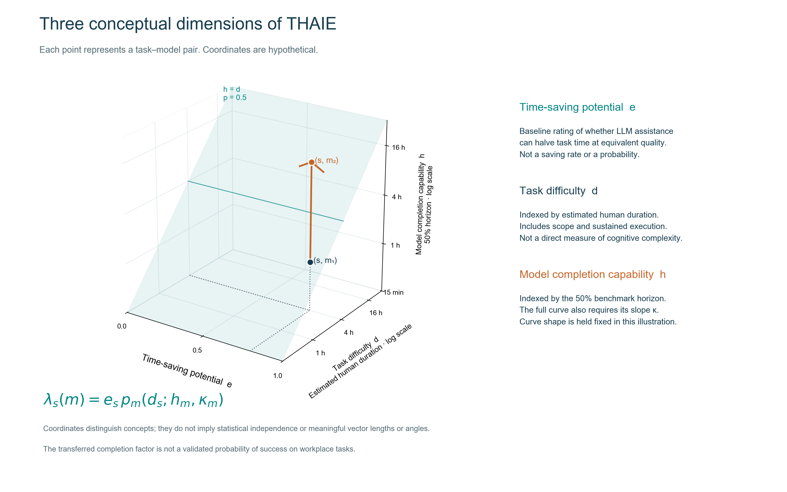
λs(m) = es × pm(ds; hm, κm)
The completion factor transfers a benchmark relationship to occupational tasks; it is not a directly validated probability of success in actual workplaces.
완료 계수는 벤치마크 관계를 직업 과업에 이전한 값이며, 실제 직장 과업에서 직접 검증한 성공확률이 아니다.
Read the definitions in English and Korean
English conceptual definition
THAIE combines baseline time-saving potential, task difficulty represented by estimated human completion time, and model completion capability characterised by a benchmark completion curve. It weights the baseline task score by a completion factor that relates the task’s estimated human duration to the model’s completion curve.
- Time-saving potential · e
- Time-saving potential is the reference assessment of whether LLM-based assistance could reduce human task completion time by at least half while maintaining equivalent output quality. The score encodes rating categories, not a percentage of time saved or a probability.
- Task difficulty · d
- Task difficulty is represented by estimated human completion time. This proxy includes task scope, workload and sustained execution demands; it is not a direct measure of cognitive complexity.
- Model completion capability · h
- Model completion capability is represented by the 50% benchmark time horizon. The full completion curve also depends on its slope, calibrated using the 50% and 80% horizons.
한국어 개념 정의
THAIE는 기존 평가에 따른 시간 단축성, 인간의 예상 수행시간으로 나타낸 과업 난이도, 벤치마크 완료 곡선으로 나타낸 모델의 완수 역량을 결합한 지표다. 과업의 예상 수행시간과 모델의 완료 곡선 사이의 관계에서 계산한 완료 계수로 기존 과업 평가 점수를 가중한다.
- 시간 단축성 · e
- 시간 단축성은 같은 품질을 유지하면서 LLM을 활용해 인간의 과업 수행시간을 절반 이상 줄일 수 있는지에 대한 기존 평가다. 점수는 평가 범주를 수치화한 값이며 실제 시간 절감률이나 확률이 아니다.
- 과업 난이도 · d
- 과업 난이도는 인간의 예상 수행시간으로 나타낸다. 여기에는 작업량·단계 수·지속적인 실행 부담이 포함되며, 인지적 복잡성 자체를 직접 측정한 값은 아니다.
- 모델 완수 역량 · h
- 모델 완수 역량은 벤치마크 50% 완수 시간지평으로 나타낸다. 전체 완료 곡선은 기울기에도 의존하며, 기울기는 50%·80% 시간지평으로 보정한다.
The baseline score is the retained human/GPT-4 category-based rating, transferred by embedding-based ridge regression where needed. Its original model assumptions remain embedded in that rating. Holding e fixed does not capture new feasibility for tasks assigned e = 0. The three-dimensional diagram represents task-level scores; occupation-level THAIE follows the manuscript’s aggregation rules.
기존 점수는 인간·GPT-4의 범주별 평정을 수치화해 평균한 학습 라벨을 사용하고, 필요한 대상 과업에는 임베딩 기반 릿지 회귀로 전이합니다. 기존 평가는 당시 모델 가정을 포함합니다. e를 고정하면 e = 0이던 과업의 새로운 수행 가능성은 포착하지 못합니다. 이 그림은 과업 수준의 개념도이며 직업 점수는 원고의 집계 규칙을 따릅니다.
Sources Eloundou and colleagues’ rating documentation · METR completion horizons · METR model and slope assumptions
Rotate the 3D concept graph · 3차원 그래프 조절
네 가지 AI 측정 방법 비교 · 한국어 설명과 수식
Eloundou et al. (2023), Anthropic, METR, THAIE의 정의·측정방법·수식·데이터·장점·한계를 비교합니다. Anthropic은 2026년 3월 observed exposure를 중심으로, 1월 effective AI coverage와 구분했습니다.
사용한 과업·직업과 O*NET 대비 범위
서로 다른 집계 단위를 섞지 않도록 과업과 직업의 분모를 따로 표시했습니다. 기준은 Eloundou가 사용한 O*NET 27.2의 과업 자료입니다. 아래 비율은 과업·직업 개수의 비율이며 고용 비중, AI 도입률 또는 예측 정확도가 아닙니다.
- 과업 ID 기준 전체 19,265개입니다. 같은 설명 문장이 여러 직업의 과업으로 반복될 수 있습니다.
- 고유 과업 문장 기준 중복 설명을 제외한 전체 17,992개입니다. 과업 ID 수와 직접 비교하지 않습니다.
- 직업 기준 위 과업이 연결된 세부 직업 923개를 SOC 6자리로 합친 798개입니다. 표의 직업 비율은 모두 이 798개를 분모로 합니다.
| 방법·단계 | 사용 과업·단위 | 과업 비율의 분모 | 과업 비율 | 사용 직업·단위 | 직업 비율의 분모 | 직업 비율 |
|---|---|---|---|---|---|---|
| Eloundou | 과업 ID 19,265개 | 과업 ID 19,265개 | 100% | SOC 6자리 798개 | SOC 6자리 798개 | 100% |
| Anthropic · 2026년 3월 공개 과업·직업 목록 | 고유 설명 문장 17,992개 | 고유 설명 문장 17,992개 | 100%1 | SOC 6자리 756개 | SOC 6자리 798개 | 94.7% |
| METR · TH1.1 | 자체 벤치마크 과업 228개 | O*NET 과업이 아님 | 산정 불가 | 직업별 표본을 구성하지 않음 | 대응 분류 없음 | 산정 불가 |
| THAIE 기존 평가 점수 학습 | O*NET 과업 ID 19,265개 | 과업 ID 19,265개 | 100% | SOC 6자리 798개 | SOC 6자리 798개 | 100% |
| THAIE 인간 수행시간 학습 | 시간 추정치가 있는 O*NET 과업 ID 5,896개 | 과업 ID 19,265개 | 30.6% | SOC 6자리 668개 | SOC 6자리 798개 | 83.7% |
| THAIE 한국 적용 | 한국직업사전 과업 문장 39,102개 | 다른 모집단 | 산정 불가 | KSCO 3자리 162개 | 다른 분류체계 | 산정 불가 |
1 목록의 범위와 실제 사용 관측은 다릅니다. Anthropic의 task_penetration.csv는 17,998행이며 고유 문장은 17,992개입니다. 이 문장 목록은 Eloundou 과업 ID 19,265개의 설명 문장 전체를 포괄합니다. penetration > 0인 고유 문장은 1,348개로, 고유 문장 17,992개의 7.49%입니다. 이 과업 목록과 직업 파일은 각각의 집계 단위를 갖습니다.
O*NET 전체 분류체계와의 구분 O*NET 27.2의 전체 직업 분류는 1,016개이며, 그중 과업 파일에 등장하는 세부 직업 923개는 90.8%입니다. 표의 직업 분모 798개는 이 923개를 SOC 6자리로 합친 값입니다. 따라서 표의 100%는 과업 자료가 있는 직업 범위에 대한 비율입니다. SOC 6자리 756개를 세부 분류 1,016개로 나누지 않습니다.
THAIE 적용 범위 한국 과업 문장 39,102개 중 37,577개가 KSCO 3자리 162개 직업에 연결되며, 1,525개는 직업별 집계에서 제외됩니다. 새 그래프의 E1 과업 663개는 인간·GPT-4 모두 E1이고 시간 추정치가 있는 O*NET 부분집합이며 연구 전체 과업 수가 아닙니다.
해석 범위 METR의 자체 벤치마크나 한국직업사전 과업 수를 O*NET 과업 수로 나눈 값을 범위 비율로 해석하지 않습니다. 시간 학습의 5,896개는 Anthropic의 원자료 전체 규모가 아니라 우리 동결 입력에서 시간 학습에 사용한 부분집합입니다. 이 표는 자료 범위를 설명하며 기존 분석 수치를 변경하지 않습니다.
출처와 집계 기준 확인 · Eloundou 논문 · Eloundou 분류 파일 · Anthropic 공식 공개 파일 · METR TH1.1
LaTeX에서 렌더링한 이미지입니다. 작은 화면에서는 이미지를 눌러 원본 크기로 볼 수 있습니다.
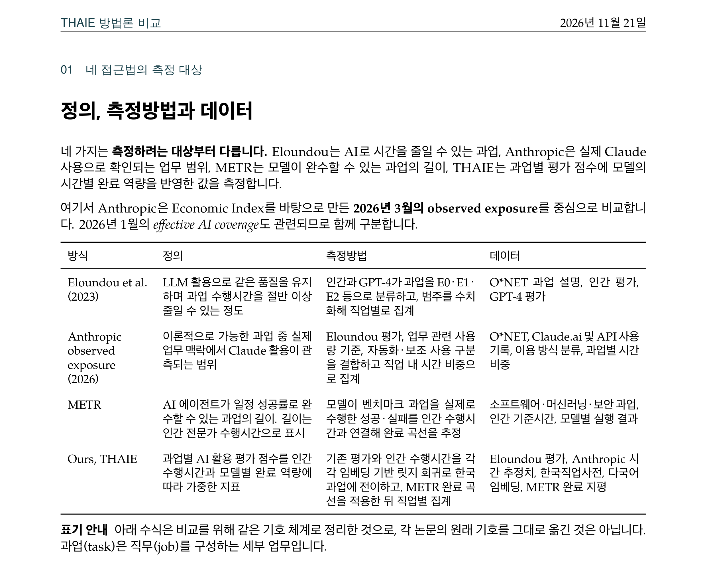
AI로 작업시간을 줄일 수 있다고 판정된 과업이라도, 사람에게 30분 걸리는 일과 20시간 걸리는 일에 같은 점수를 주어도 되는가?
Eloundou의 β 지표는 같은 E1 과업에 모두 1을 부여합니다. 아래는 원고 입력 자료에서 인간과 GPT-4가 모두 E1로 판정한 과업 663개의 시간 분포와 시간 가중 점수입니다. 인간 수행시간은 Anthropic의 추정치이며, 가중 점수는 기존 METR 곡선을 적용한 계산값입니다. 실제 AI 수행 성공률을 관측한 결과는 아닙니다.
| 방법 | 핵심 질문 |
|---|---|
| Eloundou | 사람이 AI를 활용하면 같은 품질로 작업시간을 절반 이상 줄일 수 있는가? |
| Anthropic · 3월 | 가능한 과업에서 실제 업무 사용이 관측되는가? |
| METR | 인간에게 이만큼 걸리는 과업을 AI가 실제로 완수하는가? |
| THAIE | 같은 판정을 받은 과업도, 사람에게 오래 걸릴수록 점수를 낮춰야 하지 않는가? |
점선 · Eloundou β = 1실선 · 시간 가중 점수 = 1 × pₘ(d)
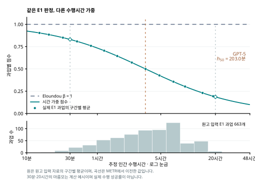
인간 수행시간 30분
Eloundou 1.000 · THAIE 0.831
인간 수행시간 20시간
Eloundou 1.000 · THAIE 0.186
h₅₀는 벤치마크 성공률이 50%가 되는 인간 수행시간이며 최대 처리시간이 아닙니다. 이 그림의 E1 표본에서는 기존 점수가 1이므로 가중 점수와 완료 계수 pₘ(d)의 값이 같습니다. 30분·20시간 값은 곡선상의 기준 계산이며 특정 과업의 실제 결과가 아닙니다. 본 연구의 한국 과업 점수와 시간은 별도로 전이·예측합니다. 벤치마크 완료 곡선을 이전했으므로 실제 직장에서의 성공확률로 해석하지 않습니다.
이 질문은 기존 평가 점수가 과업의 길이를 명시적으로 구분하지 않는다는 점에서 출발합니다. 길이에 따른 가중에 METR 곡선을 사용하는 것은 별도의 방법론적 가정입니다. 인간의 AI 활용에 따른 시간 단축 분류와 에이전트 완수 벤치마크는 서로 다른 측정 개념입니다.
Anthropic의 관측 사용 지표는 이 곡선과 측정 대상이 달라 수치로 겹쳐 그리지 않았습니다. 2026년 1월 effective AI coverage는 이미 성공률과 시간·빈도를 결합합니다.
곡선은 원고의 동결된 METR 입력 파라미터를 원래 정밀도로 사용합니다. 30분 값이 종전 0.830에서 0.831로 바뀐 것은 파라미터 반올림을 제거했기 때문이며 분석 결과를 변경한 것은 아닙니다. 데이터 기반 그래프 원본 · Eloundou 원문 · Anthropic 원문 · METR 방법론
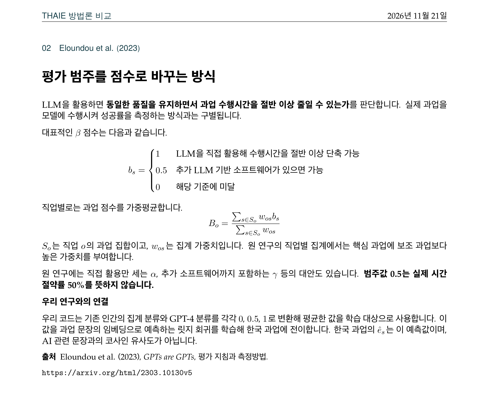
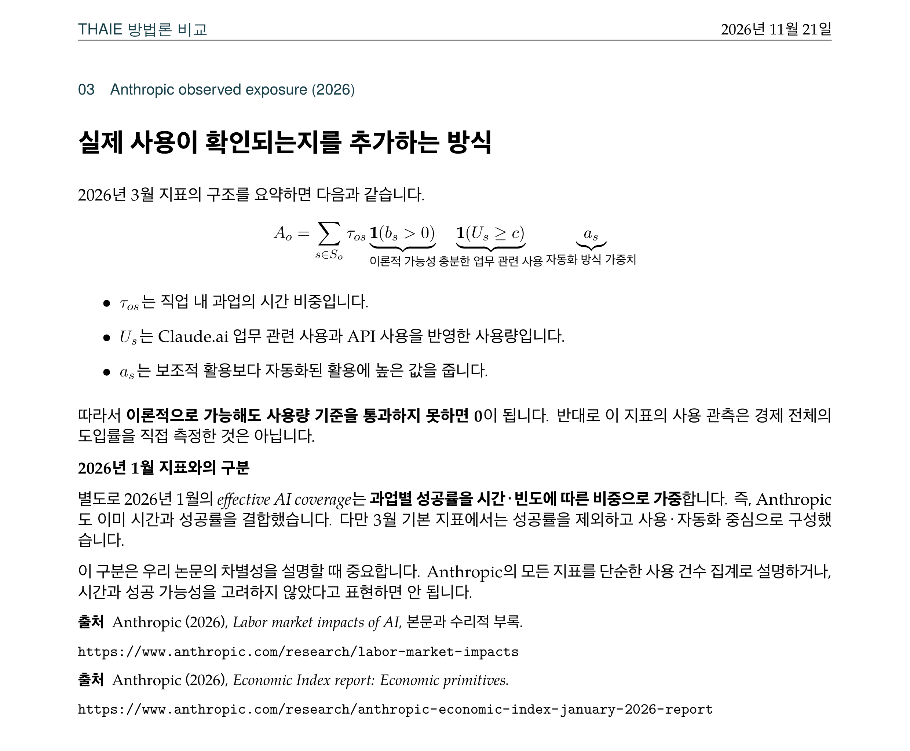
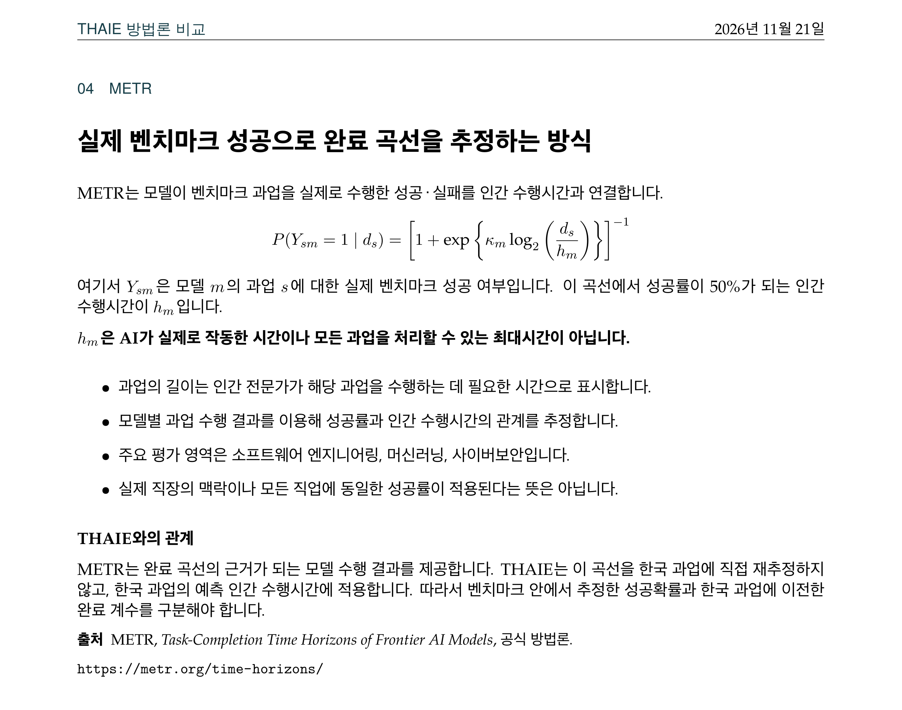
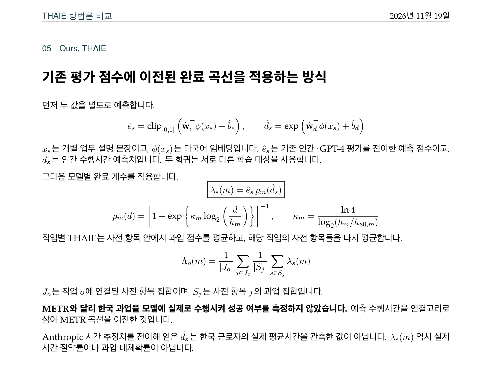
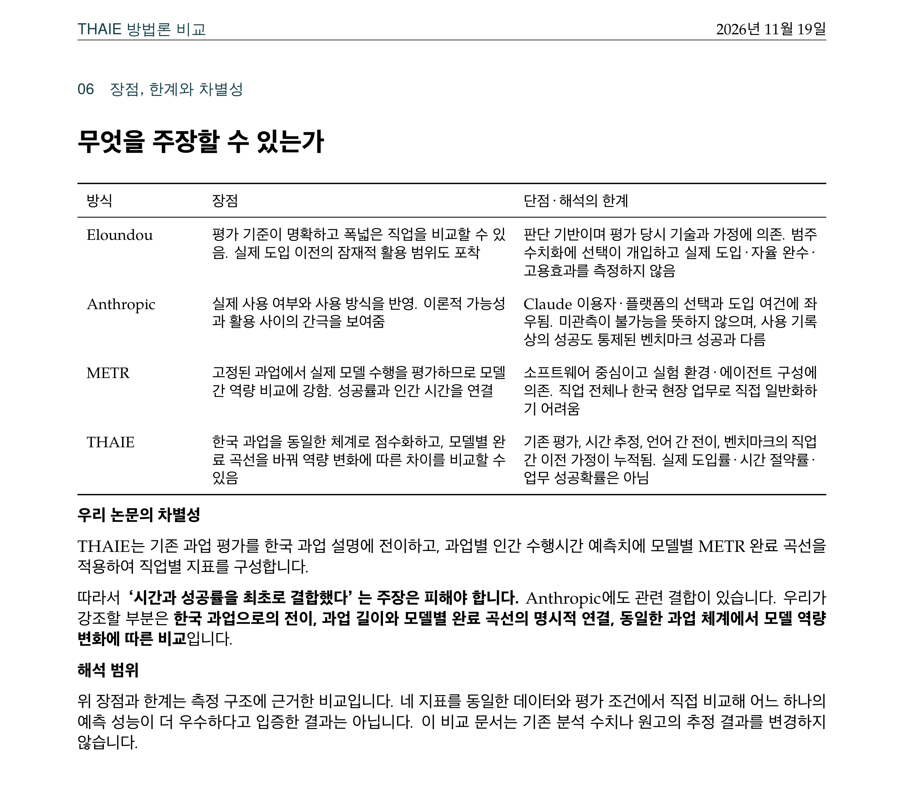
기존 분석 수치는 변경하지 않았습니다. 이 문서는 측정 구조의 비교이며, 네 지표의 예측 성능을 동일 조건에서 직접 검증한 결과가 아닙니다.
View the equations
(1)
 (2)
(2)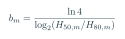
(3)(4)
E is conventional task exposure, referred to as unweighted exposure when compared with THAIE; d̂ is predicted human task duration. H₅₀ and H₈₀ are the agent’s human-duration horizons at 50% and 80% success. Jₒ and Sⱼ count the entries in occupation o and tasks in entry j; 𝒥ₒ and 𝒮ⱼ denote those sets. Scores average tasks within entries, then entries within occupations.
For E = 0.80, the 2025 GPT-5 curve gives THAIE ≈ 0.61 for a 50-minute task and 0.29 for a 400-minute task. With curve slope held fixed, longer agent horizons raise the weight assigned to longer tasks.
Unlike Anthropic’s usage-based exposure, THAIE measures capability-constrained potential. Durations and transferred completion weights are estimates. The descriptive comparisons below use the 2025 reference; the Korean panel test uses the GPT-4 reference horizon.
What the measure adds
Within the 33 highly exposed Korean occupations in the panel, a one-standard-deviation increase in THAIE is associated with a trend-adjusted post-2022 employment difference of −4.3 log points, whereas unweighted exposure shows no significant break. The panel includes occupation and year fixed effects and an exposure-specific linear trend. This relative difference is distinct from aggregate occupational growth and does not identify an AI employment effect.
Across the full 2013–2025 Korean period, exposed employment expanded as gains among workers aged 40 and over outweighed losses among workers under 30. Monitoring entry opportunities therefore matters even where total employment grows.
Prediction in highly exposed occupations
Under common controls, THAIE reduced cross-validated prediction error relative to conventional exposure by 5.3% in Korea and 8.2% in the United States within highly exposed occupations, although gains varied across sample partitions.
Comparison conditions and results
| Country | Occupations | Conventional E, MAE | THAIE, MAE | Error reduction |
|---|---|---|---|---|
| Korea | 27 | 11.06 | 10.47 | 5.3% |
| United States | 22 | 18.81 | 17.26 | 8.2% |
April employment at ages 16+ in 2020–2025. The outcome is the 2022–2025 log change in employed persons. High exposure is the upper employment-weighted quintile of conventional E. Both models use the 2025 GPT-5 horizon framework, fixed 2020–2022 employment weights and the same five-fold occupation splits, controlling for 2020–2022 employment growth, log baseline employment and country-specific major occupational categories.
MAE is in log points; lower is better. Across 50 further partitions, THAIE improved MAE in 26 cases in Korea and 31 in the United States. Controls-only MAEs were lower at 8.64 and 16.12. This retrospective comparison is exploratory and uses shared training labels; it does not establish independent measurement validation, general predictive superiority or an AI employment effect. Industry-year shocks and population changes are not controlled here.
The US employment source is the Basic Monthly Current Population Survey. This common-window prediction check is separate from the Korean long-panel break estimates below.
01 / The exposure landscape
AI exposure across selected occupations
The 2025 reference uses GPT-5 with a 50% completion horizon of 203 minutes. Panel a compares occupational scores; panel b shows the task-level landscape.
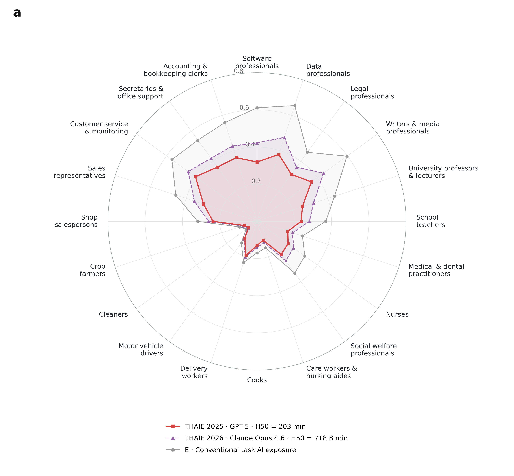
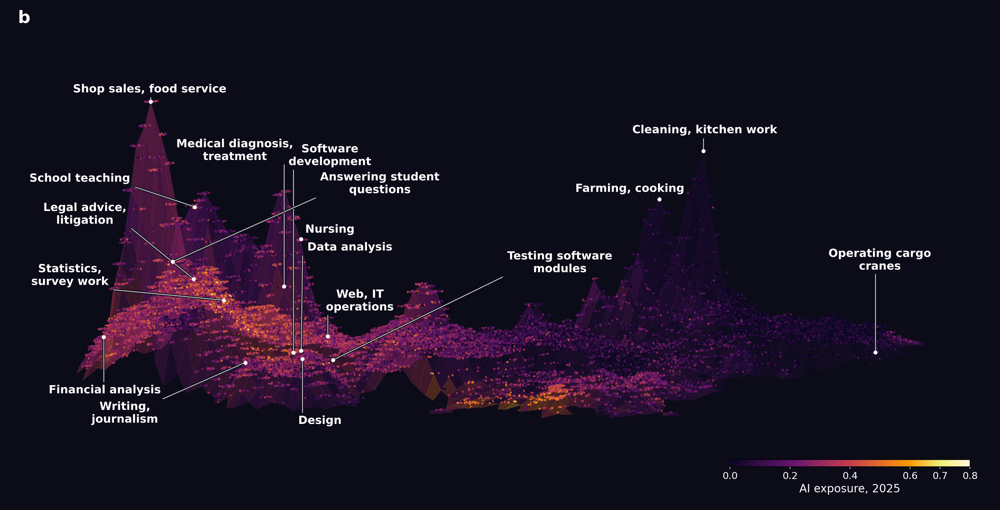
02 / Exposure and labour-market outcomes
AI exposure and labour-market outcomes
Employment change, 2022–2025, against 2025 AI exposure across 162 occupations.
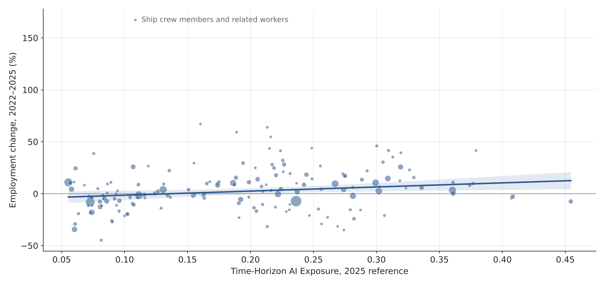
Each point is one occupation, with area proportional to baseline employment. The line is an employment-weighted fit with a 95% band (slope +3.96 percentage points per 0.1 exposure, HC3 SE 1.63, R² 0.09).
The fit is descriptive, not causal, and it differs from the paper’s trend-adjusted panel model within high-exposure occupations.
03 / The overall employment and unemployment picture
Employment and unemployment rates (%)
May observations, ages 15+, 2013–2025. The dashed line marks 2023.

Employment rate = employed / population aged 15+. Unemployment rate = unemployed / labour force. Both are percentages.
04 / Who works in each exposure group?
Workers in high- and low-exposure occupations
High-exposure workers are younger on average and more likely to be women and regular employees.
Low exposure is blue; high exposure is red. Differences are high minus low.
Worker profiles by AI exposure, 2025
Reading the table. Percentages describe employed people within each exposure group, not employment rates. Percentage differences are in percentage points; other differences retain the stated units.
| Category | Characteristic | High exposure | Low exposure | Difference |
|---|---|---|---|---|
| Exposure | AI exposure score | 0.333 | 0.066 | +0.267 |
| Demographics | Mean age, years | 43.2 | 57.0 | -13.9 |
| Women (%) | 51.3 | 45.5 | +5.8 | |
| Married (%) | 60.0 | 61.1 | -1.0 | |
| Aged 15–29 (%) | 13.8 | 8.4 | +5.4 | |
| Aged 55–64 (%) | 14.2 | 24.8 | -10.7 | |
| Aged 65+ (%) | 4.1 | 36.9 | -32.8 | |
| Labour market | Weekly working hours | 39.4 | 33.3 | +6.1 |
| Monthly pay, KRW million | 3.96 | 2.04 | +1.92 | |
| Regular employees (%) | 77.4 | 29.1 | +48.3 | |
| Self-employed (%) | 9.8 | 25.2 | -15.4 | |
| Sample | Estimated employed persons, millions | 5.78 | 5.51 | +0.27 |
| Unweighted person-wave records | 71,677 | 159,023 | -87,346 |
Worker profiles by AI exposure, 2022
| Category | Characteristic | High exposure | Low exposure | Difference |
|---|---|---|---|---|
| Exposure | AI exposure score | 0.335 | 0.067 | +0.268 |
| Demographics | Mean age, years | 41.8 | 55.8 | -14.0 |
| Women (%) | 51.3 | 43.4 | +7.9 | |
| Married (%) | 60.6 | 63.0 | -2.4 | |
| Aged 15–29 (%) | 17.1 | 8.5 | +8.6 | |
| Aged 55–64 (%) | 11.7 | 27.2 | -15.5 | |
| Aged 65+ (%) | 2.7 | 30.9 | -28.2 | |
| Labour market | Weekly working hours | 38.4 | 34.9 | +3.5 |
| Monthly pay, KRW million | 3.51 | 1.93 | +1.58 | |
| Regular employees (%) | 75.8 | 27.8 | +48.0 | |
| Self-employed (%) | 10.2 | 25.2 | -15.0 | |
| Sample | Estimated employed persons, millions | 5.32 | 5.78 | -0.46 |
| Unweighted person-wave records | 73,140 | 167,435 | -94,295 |
05 / Age and sex trajectories
Young and older workers diverge after 2023

High-exposure youth employment moved from +2.0% in 2019–2022 to −12.4% in 2022–2025; older employment growth accelerated from +18.8% to +63.9%. The latter-period low-exposure changes were −5.7% and +13.9%.
AI may reinforce Korea’s existing structural adjustment, consistent with the entry-work mechanism discussed by Brynjolfsson et al. and Massenkoff and McCrory. These patterns do not establish an AI-caused age divergence.
Youth employment by sex
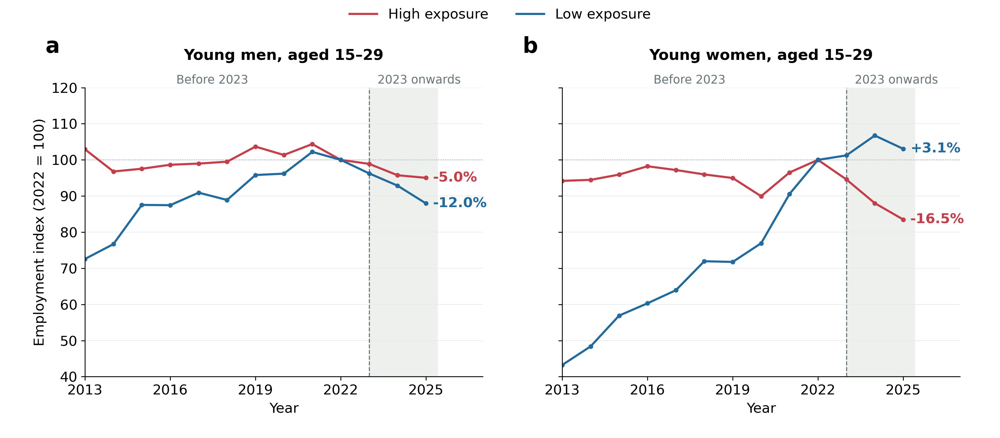
Between 2022 and 2025, young men’s employment changed by -5.0% in high exposure and -12.0% in low exposure. For young women, the corresponding changes were -16.5% and +3.1%.
Ages 15–29 in both panels. Fixed high- and low-exposure occupation groups use THAIE 2025 (GPT-5, H50 = 203 min), selected with 2019–2021 employment weights. Annual employment averages April and October survey waves. Each sex and exposure group is indexed separately to 2022 = 100. These are changes in employed-person stocks, not employment rates or identified AI effects.
Exploratory sex comparison and subsequent panel validation
Subsequent panel validation did not consistently confirm the sex-specific exposure gradient after accounting for prior trends and industry shocks. The high-exposure panel estimates were not statistically significant, and the significant all-occupation industry specification was sensitive to excluding accounting clerks and adding COVID controls. The figures below provide exploratory descriptive evidence, not as an established AI effect.
Different adjustment across young women’s and men’s occupations
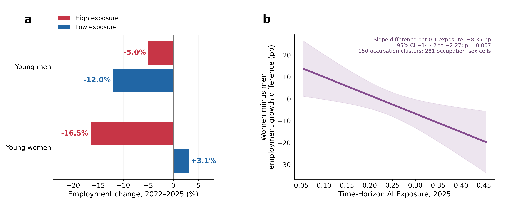
a, Observed employment changes for ages 15–29. b, The fitted female-minus-male growth difference decreases by 8.35 percentage points per 0.1 exposure (95% CI −14.42 to −2.27; p = 0.007). WLS uses sex-specific 2022 employment weights and occupation-clustered standard errors, with 281 occupation–sex cells across 150 occupations. All matched observations, including outliers, are retained. This exploratory cross-sectional interaction model does not control prior trends or industry shocks and is separate from the paper’s trend-adjusted panel model.
Where did employment fall most among people in their twenties?
Top five occupations ranked by the decline in employed-person counts, 2022–2025. These tables use ages 20–29; the figure above uses 15–29. Exposure groups and scores use the fixed 2025 reference.
Women aged 20–29, high exposure
| Occupation | 2022 | 2025 | Change | Change (%) | THAIE |
|---|---|---|---|---|---|
| Accounting and bookkeeping clerks | 124,294 | 88,935 | -35,359 | -28.4 | 0.360 |
| Secretaries and office support workers | 78,866 | 58,798 | -20,068 | -25.4 | 0.361 |
| Telecommunications sales workers | 30,196 | 20,490 | -9,706 | -32.1 | 0.454 |
| Customer service and monitoring agents | 35,923 | 28,473 | -7,449 | -20.7 | 0.408 |
| Financial clerks | 33,603 | 26,960 | -6,642 | -19.8 | 0.336 |
Men aged 20–29, low exposure
| Occupation | 2022 | 2025 | Change | Change (%) | THAIE |
|---|---|---|---|---|---|
| Construction and mining labourers | 28,433 | 14,646 | -13,786 | -48.5 | 0.060 |
| Manufacturing labourers | 38,304 | 27,897 | -10,408 | -27.2 | 0.074 |
| Wood, furniture, musical instrument and sign craft workers | 5,755 | 3,082 | -2,673 | -46.4 | 0.063 |
| Metal forming craft workers | 15,407 | 12,853 | -2,554 | -16.6 | 0.080 |
| Painting and plating machine operators | 5,676 | 3,472 | -2,205 | -38.8 | 0.071 |
Counts are survey-weighted annual averages of April and October waves, rounded to persons. The 2025 cell for men in wood, furniture and related craft occupations contains only 29 person-wave records. These are repeated cross-sections, not tracked job losses or causal AI effects. Declines in office and customer-service work among women and production and construction work among men suggest different occupational contexts; the table alone cannot identify their causes.
Additional age and sex comparisons

Entry into work and supporting regression checks
Recent job starts among young people

A recent start is a current job begun in the survey month or preceding two months. This surviving stock is not a complete hiring flow or a first-job rate.
Supplementary regression using 2025 exposure
Within high-exposure occupations, the trend-adjusted occupational model estimates a −4.62 log-point post-2022 relative employment break per fixed exposure standard deviation. Its 2,000-permutation coefficient p-value is 0.021, and occupation-exclusion coefficients remain negative. This conditional occupational gradient is a separate statistic from the age-group growth rates above.

Full demographic estimates and supporting checks
| Population | Break, log points | Cluster SE | Cluster p | Permutation p, coefficient |
|---|---|---|---|---|
| All employed persons | -4.62 | 1.30 | 0.0014 | 0.0210 |
| Aged 15–29 | -2.37 | 2.89 | 0.4185 | 0.5792 |
| Aged 15–34, sensitivity | -5.49 | 2.06 | 0.0128 | 0.0870 |
| Aged 65+ | +0.50 | 5.08 | 0.9223 | 0.9510 |
| Men | -4.55 | 1.95 | 0.0274 | 0.0570 |
| Women | -4.14 | 1.31 | 0.0037 | 0.0920 |
| Aged 55–64 | -2.37 | 3.63 | 0.5182 | 0.5112 |
The model uses annual log employment, occupation and year fixed effects, fixed 2019–2021 occupation employment weights and an exposure-specific linear trend. Exposure is standardised once within the analysis sample. There is no annual restandardisation. The outcome for young people includes ages 15–29; ages 15–34 are a sensitivity analysis. Zero employment cells are excluded from log regressions without a pseudocount.
The unrestricted event study rejects jointly flat pre-period gradients for the all-age sample. The trend-adjusted break describes a relative association and does not identify an effect of actual AI adoption. Neither the youth nor older-group coefficient establishes that the demographic contrast was caused by AI.

Further analysis of bachelor’s workers by age and occupation
The all-age bachelor’s coefficient of −5.84 log points does not carry over as a statistically established young-worker result. For ages 15–29, the same trend-adjusted model gives −2.21 (cluster SE 4.04; permutation p = 0.608). For ages 40–54, it gives −8.75 (cluster SE 1.86; permutation p = 0.008). Omitting each occupation leaves the 40–54 coefficient between −9.44 and −7.95.
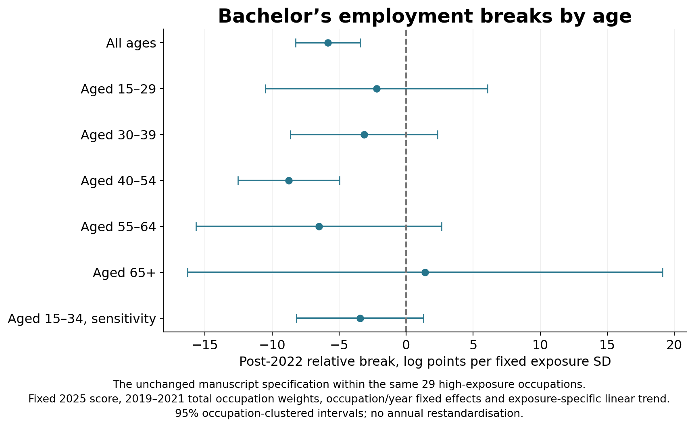
| Age | Break, log points | Cluster SE | Cluster p | Permutation p, coefficient | Occupation-years |
|---|---|---|---|---|---|
| Aged 15–29 | -2.21 | 4.04 | 0.589 | 0.608 | 360 |
| Aged 30–39 | -3.14 | 2.68 | 0.251 | 0.356 | 377 |
| Aged 40–54 | -8.75 | 1.86 | <0.001 | 0.008 | 377 |
| Aged 55–64 | -6.51 | 4.47 | 0.156 | 0.204 | 374 |
| Aged 65+ | +1.42 | 8.65 | 0.871 | 0.858 | 306 |
| All ages | -5.84 | 1.17 | <0.001 | 0.009 | 377 |
| Aged 15–34, sensitivity | -3.45 | 2.32 | 0.149 | 0.326 | 373 |
Occupation and age contributions to −5.84
The largest negative occupational contributions are telecommunications sales workers (−1.72 log points), secretaries and office support workers (−0.72), and transport and trade clerks (−0.62). Together they account for approximately 52.4% of the net coefficient. Leaving out telecommunications sales alone still gives −4.76.
The exact age allocation assigns −2.83 log points, approximately 48.6% of the net coefficient, to ages 40–54. Ages 30–39 contribute −1.40 and ages 15–29 contribute −0.72. This allocation is not an age-specific causal effect or a count of displaced workers; it decomposes the regression coefficient.
Separate occupation and age contributions
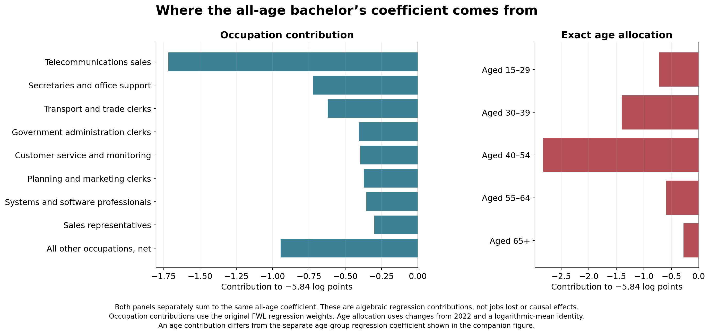
Which occupations account for the age allocation?
Within the 40–54 accounting allocation, telecommunications sales contributes −0.62 log points, customer service and monitoring −0.41, and transport and trade clerks −0.29. In the 15–29 allocation, telecommunications sales (−0.52) and secretarial support (−0.30) are partly offset by positive contributions from customer service and government administration. These offsets help explain why the all-age result cannot simply be assigned to young workers.
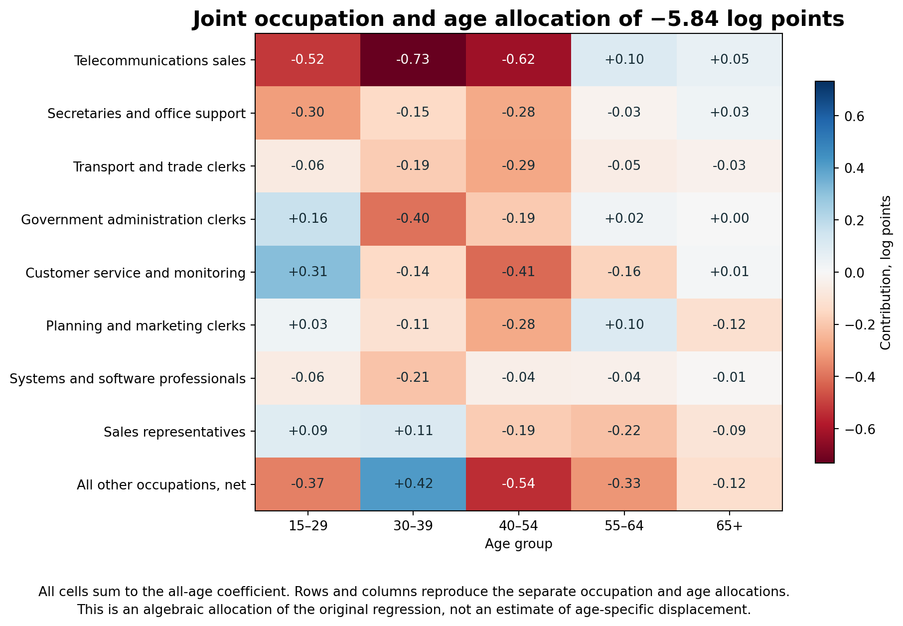
Raw employment and the regression answer different questions
From 2022 to 2025, bachelor’s employment at ages 15–29 fell by 4.2% in high exposure and rose by 1.2% in low exposure. At ages 40–54 it rose by 14.5% and 7.3%. The negative 40–54 coefficient therefore describes a weaker exposure-related path relative to the fitted trend within the high group, not an absolute employment decline or a high-minus-low growth estimate.
Bachelor’s age-specific employment trajectories

Definitions and validation
All age regressions retain the same 29 high-exposure occupations, fixed 2025 AI exposure, once-only standardisation, 2019–2021 total occupation employment weights, occupation and year fixed effects, exposure-specific linear trend, cluster correction, 2,000 score permutations and occupation-exclusion checks. Ages 15–34 provide a sensitivity analysis. Missing or zero subgroup outcomes are not replaced with a positive pseudocount.
As a supplementary multiplicity check, the 40–54 permutation coefficient p-value is 0.040 after Holm adjustment across the five non-overlapping age bands. Unadjusted estimates are also reported. The 40–54 result is robust within that age group; a significant coefficient in one age group and an insignificant coefficient in another is not by itself a test that the two slopes differ. These are conditional associations rather than identified effects of actual AI adoption.
The occupation allocation is the FWL numerator by occupation divided by its common denominator. For age allocation, age-specific employment changes from 2022 are divided by the logarithmic mean of the occupation’s total bachelor employment and its 2022 value. These components sum exactly to its log change. Applying the same regression functional makes the age components sum to −5.84. Unobserved age cells enter only the accounting identity as zero observed weighted employment, not the log regressions as imputed outcomes.
Explore occupations, tasks and methods
Open the interactive occupation map and searchable task records
Use the map and search to inspect individual records. Model comparisons are optional; the main narrative uses the 2025 reference.
Occupation map
Each node is an occupation. Position separates predicted human task duration from content exposure. Brighter nodes have higher time-horizon AI exposure; node area is proportional to employment. Representative occupations are labelled.
Time-horizon AI exposure
0 · lowerHigher
Scroll or use + / − to zoom.
Drag to pan. Select a node for its record.
Time is a transferred prediction, not an observed Korean completion time. Employment is the survey-weighted mean of April and October waves, 2023–2025, across recorded ages and education groups. Node area is proportional to employed persons; the radius therefore follows a square-root scale. The 2026 model scenario does not imply that employment was measured in 2026. Colour uses a fixed scale across scenarios.
Search the analytical records
Occupations and tasks
Loading the task corpus, approximately 11 MB…
The initial view shows the ten highest time-horizon exposure occupations under GPT-5 (2025). Ranks always refer to all 162 mapped occupations; search filters do not redefine them. Human durations and exposure scores are estimates. Original Korean task wording is retained as source data.
Optional comparisonWhere does the horizon change the ranking most?Expand / collapse
The ten occupations with the largest absolute rank difference between BGE content exposure and BGE time-horizon exposure, among all 162 occupations. This comparison holds the encoder fixed. Larger rank changes are relative reordering, not observed automation or a rise in absolute exposure.
Content exposure rankTime-horizon exposure rank
| Occupation | Content exposure | Horizon exposure | Content rank | Horizon rank | Absolute rank gap |
|---|
Top ten by time-horizon exposure
Measurement, sources and interpretation
03 / Interpretation and provenance
Content exposure, conditioned on task length
The measurement rule
λs(m) = es × pm(d̂s)
es is predicted content exposure. d̂s is predicted human completion time in minutes. pm is the transferred model-specific completion curve evaluated at that duration. The horizon is measured in human task time, not AI runtime.
The weight lies between zero and one. Horizon exposure therefore cannot exceed the corresponding content score. A rank increase changes relative prominence within a specified population.
How scores are aggregated
Task scores are averaged within a dictionary entry. Entry means are then averaged within each three-digit KSCO occupation. No employment or task-frequency weights are applied to these occupational scores.
The explorer uses a linkage-corrected mapping with 37,583 mapped task statements and 1,519 without an occupational link. The paper’s panel application uses 37,577 mapped and 1,525 unmapped statements; these mapping versions should be distinguished. All 39,102 statements retain their own scores and source IDs. Sentence numbers are zero-based, as in the analytical files.
Observed and estimated information
The task wording comes from the Korean Dictionary of Occupations; the displayed IDs retain the analytical entry and sentence numbering. Content scores and human completion times are model predictions. The completion weights are transferred estimates. They have not been validated as Korean task-specific agent success probabilities.
Employment comparisons use fixed 2025 exposure quintiles selected with 2019–2021 employment weights. The Korean panel result reported above uses 33 occupations selected by E5-based conventional exposure and the GPT-4 horizon. It is separate from the fixed-2025 descriptive comparisons. The explorer’s rank comparisons cover all 162 mapped occupations. Longer horizons are capability scenarios, not forecasts of employment or national AI adoption.
Sources and coverage
- Korea Employment Information Service / Work24, Korean Dictionary of Occupations, 2020 source edition. Source IDs use the analytical KEIS2020 entry numbering, not live Work24 API identifiers.
- METR task-completion time horizons, four model snapshots retained from the analytical release. This explorer does not claim to show the latest frontier models.
- Anthropic Economic Index, economic primitives, source duration estimates used in the transfer model. These are estimates associated with AI-use conversations, not timed observations of Korean workers.
- O*NET, source task framework used in the transfer pipeline.
- and . English occupation names are author translations, not official KSCO English labels.
Source text is reproduced with permission confirmed by the project owner. Original source rights remain with their respective holders. No Korean employment microdata or full manuscript is distributed here.
Scope of validation
Duration estimates are transferred across language and work contexts. Validating task boundaries, completion standards and human times for each country is outside this application. The explorer supports inspection and reproducibility of the index, rather than treating the scores as directly observed automation outcomes.
The presentation adapts the questions illustrated in Massenkoff and McCrory (2026) to Korean employment data. Our scores measure potential exposure. Their platform-use and unemployment measures are not replaced by Korean employment stocks.
06 / Educational attainment
Education and AI exposure
Employment paths and regression results by degree
Employment grew in both exposure groups for all three degree categories between 2022 and 2025. Bachelor’s employment grew by 14.6% in high exposure and 17.7% in low exposure; master’s employment grew by 18.9% and 16.5%. Doctoral employment grew by 46.3% and 101.8%, respectively, but the low-exposure doctoral population rose from only about 2,100 to 4,200 people.
| Degree | High 2022 | High 2025 | High change | Low 2022 | Low 2025 | Low change |
|---|---|---|---|---|---|---|
| Bachelor’s | 2,785,651 | 3,193,287 | +14.6% | 520,501 | 612,878 | +17.7% |
| Master’s | 313,527 | 372,755 | +18.9% | 29,757 | 34,681 | +16.5% |
| Doctorate | 41,920 | 61,328 | +46.3% | 2,097 | 4,232 | +101.8% |
Counts are estimated employed persons, annual survey-weighted means of April and October. The same 29 high- and 25 low-exposure occupations are used for every degree. Education follows the educational-attainment coding described in the paper. This describes all-age workers, not new graduates or graduate employment rates.
For comparison, high-exposure employment grew by 7.9% for bachelor’s workers, 0.3% for master’s workers and 1.9% for doctoral workers during 2019–2022. All three high-exposure degree stocks therefore grew faster in 2022–2025. The regression below addresses the exposure gradient within that group, rather than whether the whole group stopped growing.
Web supplement using 2025 exposure
Supplementary bachelor’s employment results
Within the 29 high-exposure occupations, the bachelor’s post-2022 coefficient is −5.84 log points per fixed exposure standard deviation (cluster SE 1.17; cluster p < 0.001). The 2,000-permutation test gives p = 0.009 for the coefficient and 0.002 for its studentised statistic. Leaving out one occupation at a time gives coefficients from −6.59 to −4.76, all negative.
This is a weaker path relative to the fitted exposure-specific trend among the more exposed occupations within the high group. It is compatible with a rising bachelor’s employment stock in that group. It is not a claim that bachelor’s employment fell absolutely or that the high–low growth gap equals the regression coefficient.
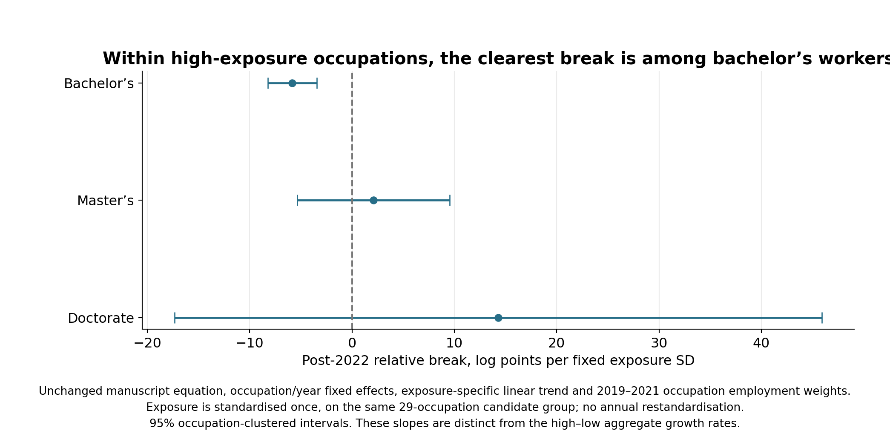
| Degree | Break, log points | Cluster SE | Cluster p | Permutation p, coefficient | Occupation-years |
|---|---|---|---|---|---|
| Bachelor’s | -5.84 | 1.17 | <0.001 | 0.009 | 377 |
| Master’s | +2.11 | 3.64 | 0.567 | 0.681 | 377 |
| Doctorate | +14.31 | 15.44 | 0.362 | 0.300 | 331 |
The master’s and doctoral stocks show substantial growth, but the same model does not establish the bachelor’s negative-break pattern for those degrees. Sparse doctoral observations also make the estimated exposure gradient less precise.
The equation, fixed 2025 score, once-only standardisation, occupation and year fixed effects, exposure-specific linear trend, fixed 2019–2021 total occupation employment weights, cluster correction and 2,000 permutations are used in each degree-specific model. Missing degree cells remain missing and are omitted from log regressions without a pseudocount.
The median annual doctoral occupation cell contains 10 person-wave records in high exposure and 2 in low exposure. The low doctoral aggregate contains 84 person-wave records in 2022 and 144 in 2025. Its 101.8% increase should therefore be read together with the small level, rather than as an estimated AI effect.
The direct master’s-minus-bachelor’s break contrast is +7.95 log points (nominal p = 0.027). The Holm-adjusted p across the three exploratory degree comparisons is 0.081. Doctoral contrasts are imprecise. The unrestricted pre-period flatness tests reject; the main coefficient is conditional on an exposure-specific linear trend rather than an identified adoption effect.
Educational composition of the high- and low-exposure workforces
These percentages use each exposure group as the denominator. The final distribution below instead uses each education level as the denominator.
| Category | Characteristic | Low exposure | High exposure | Difference |
|---|---|---|---|---|
| Education | Below upper secondary (%) | 35.5 | 1.1 | -34.4 |
| Education | Upper secondary (%) | 41.5 | 19.3 | -22.1 |
| Education | Junior college (%) | 11.2 | 16.9 | +5.7 |
| Education | Bachelor’s degree (%) | 11.1 | 55.2 | +44.1 |
| Education | Master’s degree (%) | 0.6 | 6.4 | +5.8 |
| Education | Doctorate (%) | 0.1 | 1.1 | +1.0 |
Exposure by educational attainment
Shares of employed people in low-, middle- and high-exposure occupations, 2025. Each education group sums to 100%.

Exact exposure shares by education
| Educational attainment | Low exposure | Middle | High exposure |
|---|---|---|---|
| Upper secondary or below | 34.3% | 56.2% | 9.5% |
| Junior college | 12.9% | 66.7% | 20.4% |
| Bachelor’s | 6.2% | 61.6% | 32.2% |
| Master’s | 2.5% | 70.6% | 26.9% |
| Doctorate | 1.3% | 79.5% | 19.1% |
The same occupational groups apply to every education level. These are all-age employed people under the educational-attainment coding described above.
Data
Data sources and descriptive statistics
View datasets, collection dates and samples
Sources supporting the current paper and the analyses shown on this website. Each page separates the observation period from access and collection dates. Samples are public task identifiers or aggregate examples, not Korean respondent records.
Korean Dictionary of Occupations
Task descriptions used to construct occupational exposure.
Conventional task-based AI exposure ratings
Training labels for transferring unweighted exposure to Korean tasks; shared labels for the Korea–US comparison.
Anthropic human task-duration estimates
Training target for estimating the human time required to perform Korean tasks without AI.
METR task-completion horizons
Model-specific completion curves used to weight task exposure by predicted duration.
Korean Regional Employment Survey
Korean occupational employment panel, age/cohort comparisons, wages, and web demographic and education analyses.
US Basic Monthly Current Population Survey
External employment comparison under conditions aligned with Korea.
Economically Active Population Survey
Website-only linked-unemployment comparisons and descriptive outcomes. Not the source of the paper’s occupational panel break estimate.
Occupational classifications and crosswalks
Connect Korean dictionary entries to KSCO-8 occupations, and US task scores through SOC to Census occupation codes.
Derived task and occupation exposure data
THAIE scores used in the paper and interactive explorer. These are model predictions and transformations of the sources above, not a separate survey.